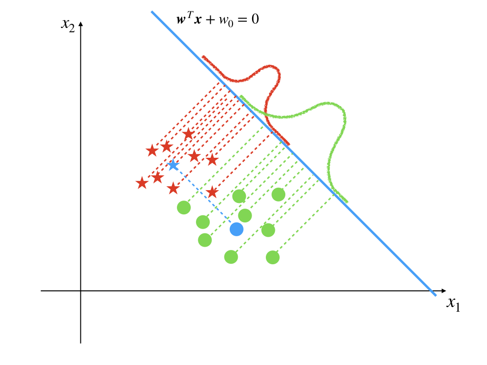

‘Least-square method’ in classification can only deal with a small set of tasks. That is because it was built for the regression task. However, we want a method to solve linear classification especially. Then we come to the famous Fisher linear discriminant. This method is also discriminative for it gives directly the class which the input x belongs to. Assuming that the linear function
y=wTx+w0(1)
is employed as before. And the threshold function f(y)={10 if y≤0 otherwise is used as well. Then if y<0 or equivalenttly wTx≤−w0 , x belongs to C1, or it belongs to C2.
We decide the input x belongs to which classes by y which is a 1-dimensional variable. However, our input vector dimension is m, which is usually greater than 2. Although the dimensions of data are reduced during this process which always comes with information loss, we still want the data in the lower dimension is possible to be separated. Under this situation, our mission is converted to find a w that can maximize the separation between different classes in 1-dimensional space.
The first strategy comes to us is to maximize the distance between the projections of the centers of different classes on a certain line. Then the first step is to get the center of a class Ck whose size is Nk and center is:
mk=Nk1xi∈Ck∑xi(2)
So the distance between the projections m1, m2 of centers of the two classes, m1, m2 is:
m1−m2=wT(m1−m2)(3)
where
mk=wTmk(4)
And for the w here is referred to as the direction vector, so its margin can be arbitrary. Luckily, the margin is not an element for our research. So, to avoid mk going to infinity, we can set the length of w to be 1:
∣∣w∣∣=1(5)
When w has the same direction with m1−m2, equation(3) get its maximum value.
Then the result looks like:

The blue star and circle are the center of red stars and green circles, respectively. and the blue solid line is the line we want on which the projections of center points have the longest distance.
With our observation, this line does not give the optimum solution. Because, although the projections of centers have the longest distance on this line, the projections of all sample points scatter into a relatively large area.
This phenomenon exists in our daily life. For example, when two seats are close, the people sitting on them do not have enough space(this is the original condition). Then we move the seats and make them a little far from each other(make the projections of centers far from each other). But this time, two fat guys come to sit on them(the projection has a big variance), then space is still not enough.
In our problem, the projections of the points of a class are the fat guys. We need to make the centers(projection of centers) far away from each other and make the points(projections of points in a class) slender that means a smaller variance at the same time.
The variance of the projected points of class k can be calculated by:
sk2=n∈Ck∑(yn−mk)2(6)
and it is also called within-class variance.
To make the seat comfortable for people who sit on them, we need to make the seat as far as possible to each other(maximize (m2−m1)2) and only let thin people sit(minimize the sum of within-class variance). Fisher criterion satisfies this requirements: